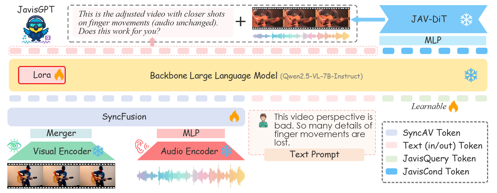

2026 1
1.1
- Video Models are Zero-Shot reasoner and learner
- Google Veo3 的论文，展示了Veo3在经过大规模训练之后涌现出来的Zero shot的能力，能够完成训练数据以外的各种任务，展现了惊人的涌现能力
1.2
- mHC https://arxiv.org/abs/2512.24880
- DeepSeek的论文，对于残差流进行了修改，将恒定为1的残差流转换成一个可学习的目标，并且将其进行Manifold-Constrained防止残差流变得过大
- Evaluating Parameter Efficient Methods for RLVR
- 对于RLVR任务中高效参数微调方案的一个分析实验，包括Lora，DoRA、AdaLoRA等变体
1.4
- JavisGPT
- 音视频编辑的模型，通过一个QwenVL+Dit拼接的架构，完成了多模态的理解和生成，包括编辑，并且着重优化了音视频协同的内容
- 输入包括video的输入，音频的输入，文本提示词。基于QwenVL，然后适配了一个Lora来进行微调。最后LLM会将输出给一个Dit，让其输出编辑好的视频音频内容

生成和理解是否需要纳入在统一的框架中，现有的方案似乎仍然没有指出一条明确的路径。从nano-banana的角度来看，似乎目前最好的方案还是让生成理解进行分离，作为一个系统进行处理
- https://arxiv.org/pdf/2512.24873 Agent Learning EcoSystem
- 是阿里团队做一个完整且系统的Agent学习框架，将阿里之前做的很多Agent相关的工作串了起来，并且致力于解决训推不一致，力图构建足够Strong的Agent RL baseline
- ROLL：支持异步 rollout-训练解耦、动态 GPU 分时复用、chunk 级信用分配的 RL 训练框架。训练框架
- ROCK：万级并发、安全隔离、GEM API 兼容的沙箱环境引擎，实现轨迹采集与运行时验证。核心是沙盒
- iFlow CLI：统一上下文管理、可配置工作流的代理框架，保证“训练-部署”零差异。核心是上下文管理

- Recursive Language Model
- 这篇论文主要针对的是超长上下文的问题，其让LLM将上下文作为一个环境变量去处理，而不是每次都一股脑地把所有上下文都塞进模型中
- 让模型自己编写Python代码来拆解上下文和调用自己，来实现上下文的高效处理

1.8
- https://nitrogen.minedojo.org/
- nvidia的工作，收集了超过40000+h游戏视频，覆盖超过1000款游戏，并且提取了动作片段还进行了打标，用这些数据训练一个游戏Agent

- Loza
- 美团开发的稀疏注意力机制，基于MLA，将标准的MLA拆成两部分，全量MLA+SSA（Stream Sparse Attention）

1.9
- NextFlow
- 用Next Scale Prediction来做生成理解统一模型
- SemanticGen
- 使用两阶段的生成方案，先生成High-Level的语义表征，再在VAE的空间中生成细粒度的纹理结构，当然与此相对的，训练也要训练两部分，Semantic Generator和VAE Latent Generator

1.12

Sida Peng老师整理的2025年关于Video World Model的相关论文，可以借这张图来查漏补缺
- VideoAuto-R1
- 关于Video Understanding做RL的论文，用两阶段的输出方案，首先让其直接输出答案，根据答案的置信度再判断要不要进行Cot
- MIMO-v2-Flash
- 小米的flash模型的技术报告，在架构上，和很多新的模型一样采用了混合架构，它采用了滑动窗口+Global Attention的混合架构
- 在滑动窗口中引入了可学习的Attention Sink Bias，在softmax的分母里增加一个可学习的项，在模型不需要关注当前窗口内Token的机会，将注意力分配给虚拟的Sink
- 滑动窗口大小仅有128 token，在消融实验中效果比512 token好
- 引入了SD做MTP
1.13
- Plenoptic Video Generation
- 这篇文章做的是多视角的Camera Control，核心贡献是在解决长时记忆的一致性，在不断的镜头变化之后，生成的视频还能保持一致性，比如在视角转一圈之后，回来看到的还是一样的场景
- 多视角的re-render比单视角的更加困难，多视角一次性渲染多个视角的视频，要求保证这几个视频之间能够保证足够的一致性。该论文解决的任务中，定义为输入video+多个相机轨迹，输出多个相机轨迹对应的video
- 解决长时记忆的一致性的核心是给Dit的注入条件
- 最Native的方案，将所有的视频都塞进去，但是无疑是极大的开销，尤其是高分辨率视频的场景下
- 用Block-Diffusion的方式，放弃一次生成多视角的视频，而是按照自回归的方案一个个生成，在逐个生成的时候，不可避免的上下文也会越来越长，因此就要做检索生成，这篇文章基于3D Fov来做检索生成，上下文中只塞入和当前视角相关的视频上下文。比如我们某个视角要看房子的背面，我们主要关注其他同样会划过房子背面的视角

- Video Deep Research
- 使用Deep Research以及一系列的工具，来做Video Understanding的增强（其实感觉不是很make sense，也就是补足一些世界知识和一些时效性的场景会有效
- BabyVision
- 做了一个Benchmark来评测VLM的能力和婴幼儿的视觉能力的差异，在这个测评集合中最强大的VLM的能力也不如6岁的儿童

1.14
- Engram
- DeepSeek的新论文，对Transformer架构进行了修改，新增了一种条件记忆机制称为Engram，研究者认为Transformer架构中缺少原生的查找模块，被迫使用计算来模拟检索机制
- 检索模块采用现代的N-gram模块，将部分MOE替换为Engram内存，可以达到一个权衡，并且在长上下文任务上有很大的提升
- Engram的模块的功能包括检索+融合两个部分，经过压缩的分词器之后，通过一个Multi-Head Hash，最后拼接成一个记忆向量，后面过一个Context-Aware Gating

在相同的参数预算下，Moe参数和Engram所占内存之间存在U形曲线的兑换关系

并且在推理过程中，Engram可以做到存算分离，Engram模块的计算和中间层的输出无关，仅仅和输入的token序列有关，也就是说我们可以将Engram模块的计算和Transformer-Block的计算解耦开，并且此种方案可以有效利用CPU内存

- Motion Attribution for Video Generation
- nvidia的论文，训练数据中的视频如何影响视频生成模型中的运动输出，因为Image生成模型已经做得非常优秀，人们往往致力于将Image Model的一些做法迁移过来，包括对于纹理，色彩等内容的优化。但是这些过程往往忽略了视频生成模型最为独特的内容，运动，运动和时间流动紧密联系，是视频生成模型最重要的特点
- 核心是提供了一种数据筛选的方案，来使得训练的模型有更好的运动一致性
Data Attribution
这个是数据处理领域的一个概念，用于研究每条数据对于模型训练带来的影响，这个领域的发展大概有这些阶段
- Ex-DL时代，前DL时代，模型较小，可以用每次更新之后模型对于测试集的变化（这里需要一个Influence Functions）来衡量，这一步需要矩阵求逆，在现代DL模型下时效
- 现代DL方案，会用类似TracIN，TRAK的方法来近似数据影响的计算
- Diffusion Model：对于Diffusion Model的衡量和其他方案有些差异，因为Diffusion不同时间步有不同的表现，因此需要norm

而这些方案对于Video diffusion领域都失效了，传统的Diffusion Data Attribution的方法会导致其关注外形而不是动作，并且在Long Video下计算开销也会扩大，这也是这篇论文的核心贡献
其做法是，首先我们有个query data，这是我们想要优化的一个动作，比如是漂浮这个现象，我们要根据这个现象去找到训练数据集合中与其正相关的数据，那么怎么找呢，就是对于两个视频都求diffusion model的梯度，先计算MSE Loss，然后对这个Loss进行一个运动的Mask遮罩，后续的梯度计算中只关心正在运动的物体，这样子计算出来的梯度就是和运动相关的，然后再把这两部分的梯度，计算相似度，就可以得出相应的正负效果


1.15
- OctoCodingBench
- MiniMax发布的新的关于Coding的Bench，是一个非常详尽的过程监督的Benchmark，会监督模型在解决Coding任务的过程中，有没有遵从用户指示，不止关注最终的测试是否通过

- MemGovern
- 经验库+Code Agent，希望Code Agent在执行编程任务的时候，能够参考一些人类的成功经验来提高成功率，标记了130+k从Github的获取的成功经验作为Code Agent的经验库，但是感觉涨点不是很高
- 个人认为作为编程辅助的工具的话，如果Code Agent在无法处理任务的时候，能够帮我从Github，StackOverflow上帮我搜索相关的解决方案，并且列出来给我看，这个是一个我会比较喜欢的功能

1.16
- https://arxiv.org/pdf/2601.10355
- 美团的Paper，一个从真实数据中合成带工具调用的训练的pipeline，用于提升Agent能力
1.21
-
https://arxiv.org/pdf/2601.08521
- 这篇论文系统论述了GRPO及其变体中的bias，其效果导致在rollout数量不足的情况下，GRPO对于低难度的Prompt过度利用，并且对于高难度的Prompt没有充分的探索
-
- 将KV-cache压缩技术纳入到RL的框架中，做了一些修正措施，来保证训练的稳定性，但是个人感觉有点tricky
- trick 1 对于稀疏计算和稠密计算差异过大的rollout，选择拒绝采样
- trick 2 重新调整重要性采样，将稀疏和稠密的加权进来
- Undeterminism in LLM
- 这是来自thinking machine的一篇有趣的文章，解释了如何从LLM中得到一个确定的可复现的结果
- 人们往往认为将LLM call的temperature调整为0就可以将LLM转化为一个稳定的映射，但事实并非如此，之前人们往往将其归因为硬件计算的一些不一致性，比如在硬件计算上，浮点数是不符合结合律的
1 2 3 4 | |
而在LLM里的kernel计算中，可能会在每次调用中出现加法顺序的变化，因为并发的线程的完成时间是无法预估的，后续的累加顺序自然也无法预估，这是很自然的假设（这种根据线程执行完成的顺序执行累加的方案称为原子加法）。
然而事实上是，LLM的前向中其实基本不包含这种影响加法顺序的方案，那么我们重新思考LLM的不确定性，可以得到一个结论就是LLM的输出收到批次的影响

我们的推理服务器可以做到是确定的，但是其他用户的requests，实际会影响到你的requests，看似LLM的Kernel中都可以做到不存在原子加法，但是在Batch操作下，原子加法又重新出现了，我们来看一个简单的例子，RMSNorm
1 2 3 4 | |
当批次很大，超过GPU的核心数量的时候，我们可以让每个core处理一个requests，此时顺序是一致的，但是当批次较少的时候，工程师们为了充分利用硬件系统的性能，会考虑拆分一个requests到不同的core上面，最后引入原子加法，从而这里会导致不一致性
- Inference Physics
- Meta的论文，用Training-Free的方案，增加Video生成的物理一致性，算是Test-time scaling吧，利用的best-of-N以及用VJEPA Surprise做Score Guidance

- https://dawning-road.github.io/blog/abc-bench
- ABC Bench，旨在构建真实后端系统中评测Agent Coding能力的评测集合

- Spatial Tree
- 这篇工作形式化了对于空间智能的理解，主要针对的是多模态理解能力，其用四个层级来描述模型的空间理解能力，并且对此构建了Benchmark

1.22
-
- 这是一篇xAI的工程师的博客，这篇博客中讲述了除了训推一致性以外的RL训练崩溃的原因。对于同一批数据进行RL的时候，简单的信号容易被提前获取，此时这批数据对于模型而言，信号逐渐减弱，噪声逐渐增加，进一步导致了模型容易出现训练崩溃的问题
- 之前人们对于RL训练稳定性的关注点主要是在训推一致性和重要性采样上面，但是这里指出的信噪比的问题，引导向基础的学习率调整策略
-
https://arxiv.org/abs/2601.14750
- Rot: Render of Cot 这篇工作做了我之前想做的一个事情，将思维链的过程用图像表示，之前有很多的工作都是在连续的空间里面做推理，但是这样就导致了推理的过程是黑盒。
- 这篇文章的训练分为两个部分，一个是训练一下对齐，让VLM会输出连续向量，并且作为监督的输出是转换成图像的文本思维链，第二部分是正式的训练，正式的训练不对思维链做监督，只对输出的结果做监督


但是我个人认为这个方案做得不好，因为它用的是VLM的encoder，这个encoder没法做重建，所以其同样无法将中间的Cot显示出来，只能通过之前一些人们分析image latent space的方案来分析Cot，应该用具有重建和理解能力的encoder才对，甚至我觉得现有的vision encoder未必适合这个任务，带重建和推理的Loss重新训一个encoder或许是解法
1.23
- https://dagroup-pku.github.io/ReVidgen.github.io/
- 字节的paper，在具身这个领域做video generation任务的测评，内部的做法或许值得我们借鉴，并且也开源的数据集

- JudgeRLVR
- 小米的论文，这篇论文认为现在的RLVR导致模型的探索过多，导致生成序列冗长，可以用两阶段的训练方式，第一阶段先训练模型的判断能力，第二阶段再训练生成，能让模型在探索的早期就对多条探索路径有自己的判断，再不降低正确率的情况下可以做到使得生成序列更加简短
1.26
- https://llm-in-sandbox.github.io/
- 提供了一个很小的仅有1.1GB的通用计算机沙盒，为一个Ubuntu系统，通过这一个系统的描述，就可以全方位提高LLM在各个benchmark上的表现，尤其是强模型的API，可以很好地在这个系统上做上下文学习
- flexibility trap in diffusion llm
- 这篇论文展示了Diffusion LLM声明的任意顺序生成的优势，其实在训练的时候会引入问题，一个合理的解释是这样的，严格的AR模型，让模型在生成中直面不确定性，因此会有低置信度的token生成，但是在diffusion llm的随机生成中，模型会学习机制优先生成置信度更高的后续token，而通过这些生成的前后token的双向注意力下，中间那个本身是低置信度的token此时的探索空间就被限制了

上述思路导致的结果就是，diffusion llm在相同的情况下，pass@k的性能不如ar模型，看似自由的生成顺序反而限制了探索空间
显然这一点在RL中至关重要，在diffusion llm的生成路径下，一些关键的high-entropy token的entropy反而是下降了，从而也就导致了对于diffusion llm的rl效果不佳

在这篇论文的实验中，其将diffusion llm在rl训练中仍然保持ar的生成顺序，但是在推理中再盖用任意顺序的生成结果，我们也可以看到，任意的生成顺序不是任何效益都没有，其在pass@1的性能往往会好于其ar顺序